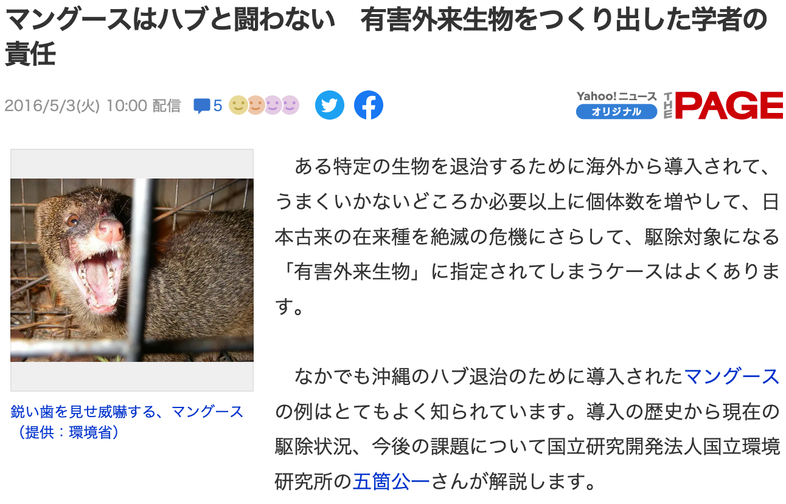
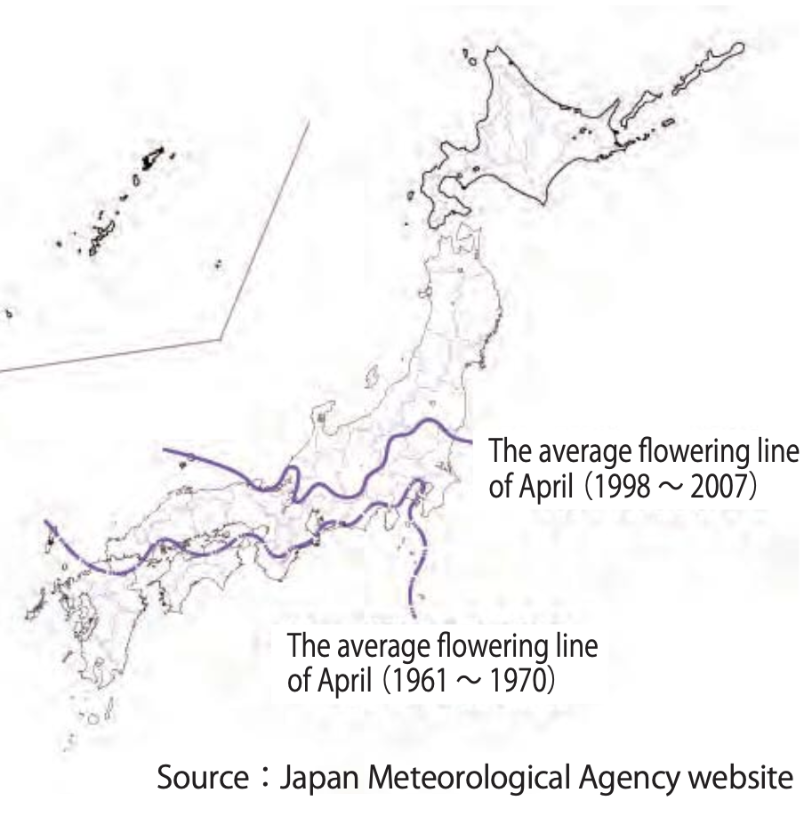
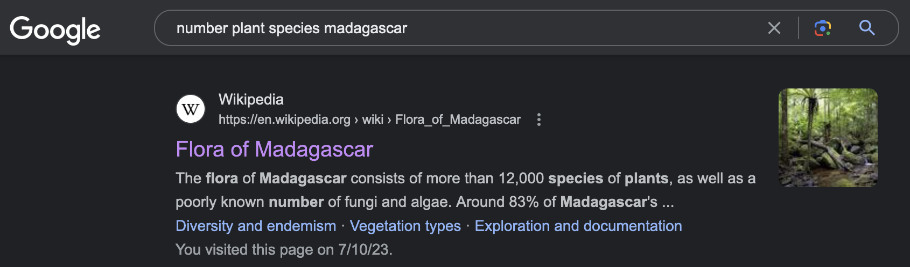
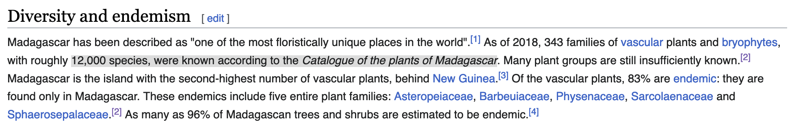
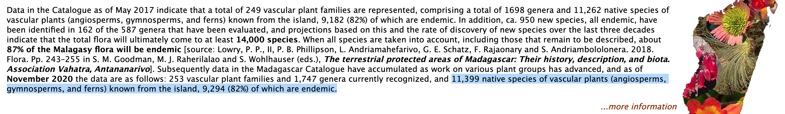
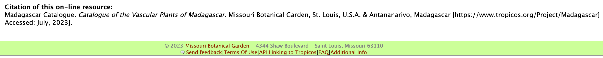

Day 6: Documenting biodiversity and threats to biodiversity

Threats to biodiversity in Japan
日本における生物多様性への危機
- Local
- Development 開発
- Artifical forests 人工林
- Invasive species 外来種
- Global: climate change 地球温暖化
Development 開発
- Japan is 70% mountainous, so population centers are concentrated on the coasts 日本は70％が山地であるため、人口の中心は沿岸部に集中している。
- Wetlands are strongly impacted by development 湿地は開発の影響を強く受ける

https://storymaps.arcgis.com/stories/65c274fef431470cb9038e3997a7ca5b
Artificial forests 人工林
- In the 1950s and 60s, large areas were planted with lumber trees 1950年代から60年代にかけて、広大な土地に木材の木が植えられた（人工林）
- But now demand is low, so many trees are unused しかし、現在は需要が少なく、多くの木が利用されていない。
- Unmanaged plantations decrease biodiversity 管理されていない人工林は生物多様性を減少させる
Invasive species 外来種
- Black bass (for fishing) ブラックバス（釣り）

https://fishingjapan.jp/fishing/3626
Invasive species 外来種
- Mongoose (for snake control) ングース（ヘビ対策）

https://news.yahoo.co.jp/articles/e80de48a8bffe63ce053d5a15172de41463aeb19
Climate change 地球温暖化
- Flowering times have shifted earlier 開花時期が早まった
- Pollinators may not be able to find their flowers 送粉者が花を見つけられない可能性がある。

Climate change 地球温暖化
- Ocean warming causes coral bleaching in Okinawa 沖縄ではサンゴの白化現象が起こっている
Documenting biodiversity
Conserving and documenting biodiversity are two sides of the same coin: you can’t have one without the other.
生物多様性の保全と記録は表裏一体である。
If we don’t know where species live, we can’t conserve them. If we don’t conserve them, there won’t be anything to study.
種がどこに生息しているのかわからなければ、保全することはできないし、生物種を保護しなければ、研究する対象もなくなってしまう。
Example: Survey of plants on Iriomote Island
例：西表島の植物調査
Final Project
For your final project, you will give a group presentation on a biodiversity hotspot.
最終プロジェクトとして、生物多様性のホットスポットについてグループ・プレゼンテーションを行う。
Final Project
Each group (3 total) chooses one hotspot
- Global Hotspots (from Conservation International list)
- Tropical Andes 熱帯アンデス
- Cape Floristic Region ケープ植物区保護地域群
- Polynesia-Micronesia ポリネシア・マイクロネシア
- Hotspots in Japan
- Ogasawara Islands 小笠原諸島
- Okinawa Islands 沖縄諸島
- Minami Alps 南アルプス
Example Hotspot Profile
Presentation should include:
- Location of the hotspot 場所
- Analysis of biodiversity 生物多様性の解析
- What groups of organisms are particularly diverse? 特に多様性の高い生物群は？
- Are there any particularly interesting species? 特に興味深い種はあるか？
- How is biodiversity distributed within the area? 生物多様性は地域内でどのように分布しているか？
- What evolutionary and geologic processes cause the high biodiversity? 生物多様性が高いのは、どのような進化的・地質的プロセスが原因か？
Presentation should include:
- Analysis of threats 危機の分析
- How much area has already been lost to human activity? 人間の活動によって、すでにどれだけの面積が失われているのか？
- What are the major threats posed? 主な危機は何か？
- Conservation outlook 保全の見通し
- What are the current conservation efforts and protection status? 現在の保全活動と保護状況は？
- What needs to be done to save biodiversity in the future? 今後、生物多様性を保全するために何が必要か？
Format
Time: 10~12 minutes
Language: English
You must cite your sources (more on that soon) 出典（参考文献）は必ず引用すること（詳しくは後述）
Submission
- Submit slides (Powerpoint) via Moodle by 12:50 PM on July 22
Division of group work
By role (example):
- Writer
- Visual-director
- Fact-checker
- Proof-reader
- Presenter
Division of group work
By section/slide number (example):
- Distribution of biodiversity (slides 1-3)
- Threats to biodiversity (slides 4-6)
- etc.
Evaluations
You will evaluate each other group’s presentation (Form A), as well as the contributions of other members of your group (Form B). The evaluations will be used when grading.
各グループのプレゼンテーション（様式A）と、自分のグループの他のメンバーの貢献（様式B）を評価する。評価は採点の際に使用される。
Evaluations
- Fill out Form A and Form B (Word documents) and submit via Moodle by 11:59 PM July 22.
About citing references
You need to cite sources in your slides when you use a direct quote, fact, or image スライドで直接的な引用、事実、画像を使用する場合は、出典を引用する必要がある。
You should try and determine if the source is trustworthy 出典が信頼できるかどうかを判断する必要がある。
- Books and academic journal articles are preferable to websites ウェブサイトよりも書籍や学術雑誌の記事が望ましい。
Wikipedia is OK, but use the primary sources if possible ウィキペディアでも構わないが、可能であれば一次資料を使うこと。
References: How to find
What is the number of plant species on Madagascar?
Find Wikipedia article by Google search まずはググってみる
References: How to find
Find text in Wikipedia article, which cites another source ウィキペディアの記事から、別の出典を引用している文章を見つける
References: How to find
Look up the source in the reference list 文献リストから出典を調べる
References: How to find
Check the original source 元々の出典を確認
References: How to find
Check the original source 元々の出典を確認
References: Example slide
Madagascar has 11,399 species of native vascular plants (82% endemic) (Madagascar Catalog)
Main threats include deforestation, overgrazing, and internal migration (CEPF)
References: Example reference List
References Cited
Critical Ecosystem Partnership Fund (CEPF). Madagascar and the Indian Ocean Islands Biodiversity Hotspot Ecosystem Profile. [https://www.cepf.net/sites/default/files/cepf-ecosystem-profile-madio-2022-en-2.pdf] Accessed: July 11, 2023.
Madagascar Catalogue. Catalogue of the Vascular Plants of Madagascar. Missouri Botanical Garden, St. Louis, U.S.A. & Antananarivo, Madagascar [https://www.tropicos.org/Project/Madagascar] Accessed: July 11, 2023.
Recommended sources
- Japan
- 日本の多様性ホットスポットの構造に関する研究 (Biological Properties of Biodiversity Hotspots in Japan)
- 生物多様性国家戦略 2023-2030 (National Biodiversity Strategy of Japan, 2023-2030)
- Global
- Critical Ecosystem Partnership Fund, “Explore the Biodiversity Hotspots”
- Especially the “Ecosystem Profile” of each hotspot
- Critical Ecosystem Partnership Fund, “Explore the Biodiversity Hotspots”